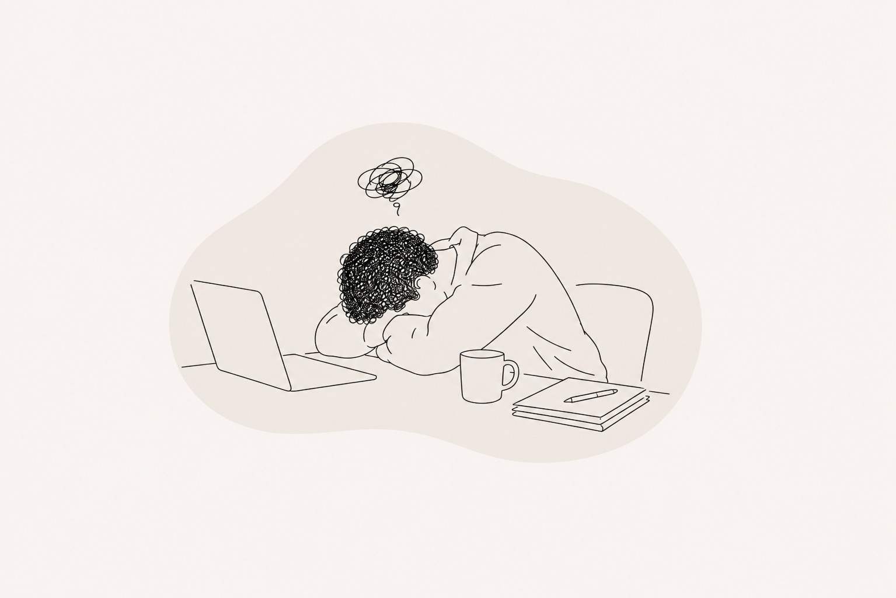

BURNOUT

Burnout is more than feeling tired after a busy week. It is a state of physical, emotional and mental exhaustion that develops after prolonged stress without sufficient recovery. Over time, the nervous system can become stuck in a state of survival, making even simple tasks feel overwhelming.
You might notice:
- Constant exhaustion, even after resting
- Difficulty concentrating or making decisions
- Feeling emotionally numb or detached
- Increased irritability
- Muscle tension, headaches or digestive issues
- Losing interest in things you once enjoyed
Together, we'll explore not only what contributed to your burnout, but also how your nervous system has adapted to prolonged stress. Our work focuses on restoring a sense of safety, reconnecting with your body and gradually rebuilding your capacity for daily life.
BOOK A SESSION →